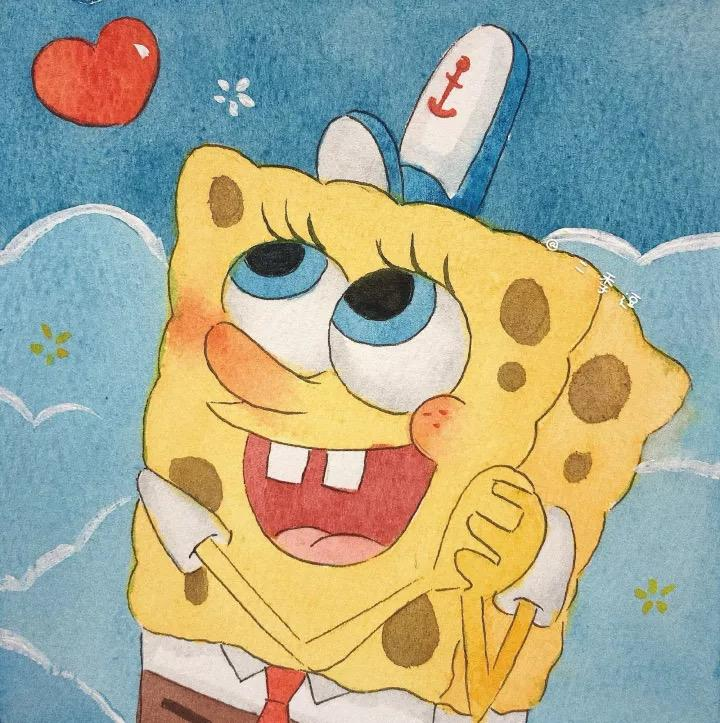
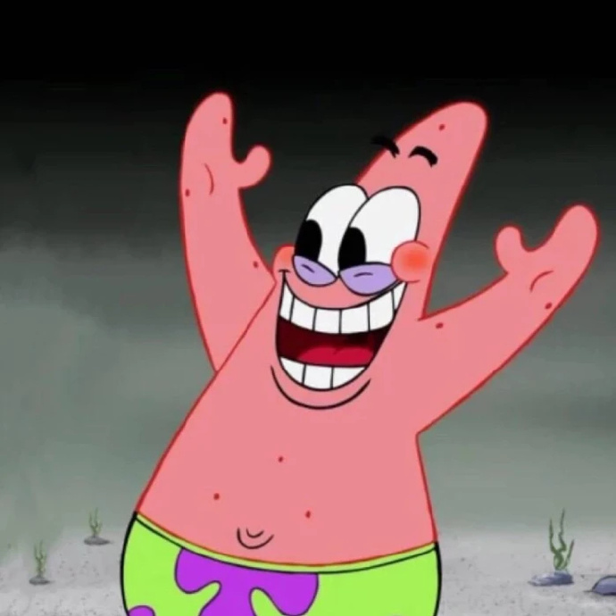
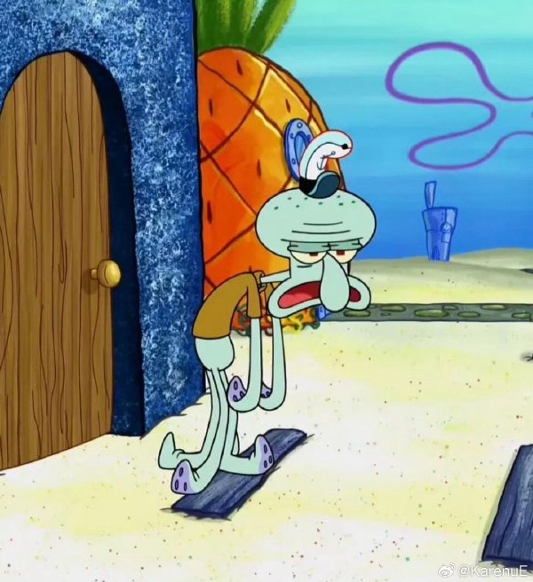
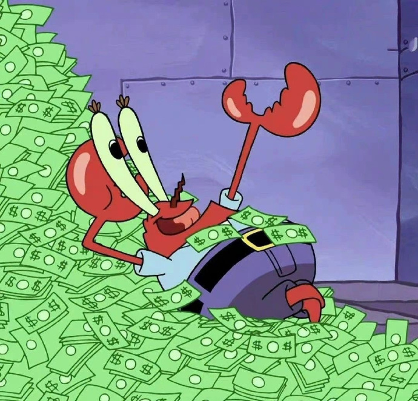
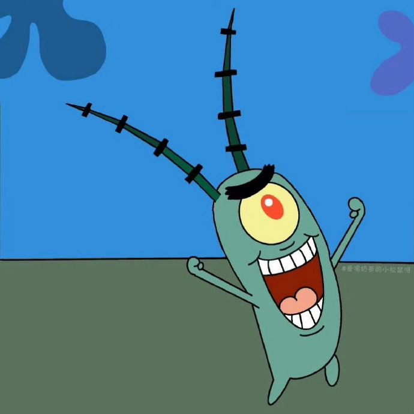

| 返回首页 | |
|---|---|
|  | 主角。黄色长方形海绵，其身体构成如同清洁用海绵。生日是1986年7月14日。两只手各拥有四根手指。以棕色短裤、白色衬衫和红色领带为主要服装 |
|  | 粉红色的海星。智商极低，头脑与身体仅使用插头连结。做什么事都会搞砸，居住在圆顶石头底下。懒惰并相当孩子气，时常在无意间呆滞的流口水，跟海绵宝宝的交情最好。 |
|  | 大鼻子章鱼，容易愤怒且势利眼，相当自恋，自以为拥有艺术才能。居住在一栋仿复活节岛人像的房屋。不喜欢自己的工作，喜欢吹奏竖笛及采用多种风格画自画像。 |
|  | 红色螃蟹，本名尤金蟹。视金钱如生命，经常为了一块钱而去冒生命危险，极为自私。快餐店“蟹堡王”的经营者。 |
|  | 蟹老板的死对头，《海绵宝宝》的主要反派角色。由1%的邪恶和99%的热毒-气组成。只有一只眼睛，时常刺痛。 |